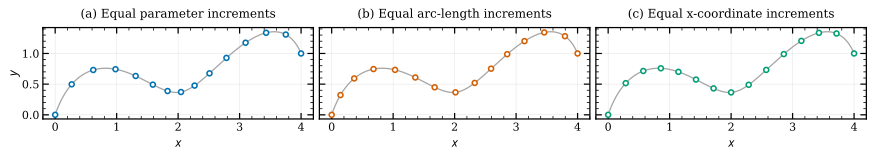

Arc-length parameterization and coordinate inversion#
A curve’s parameter is a label, not a distance or a spatial coordinate. Reparameterization supplies a more useful label while preserving the geometric curve. Two common choices are traveled distance \(s\) and a selected coordinate such as \(x\). They solve different inverse problems.
Arc-length coordinates#
For a curve on \([a,b]\), define cumulative distance
If the speed \(v(u)=\|\mathbf C'(u)\|\) is strictly positive, \(s(u)\) is strictly increasing and has an inverse \(u(s)\) on \([0,L]\). The distance-parameterized curve is \(\widehat{\mathbf C}(s)=\mathbf C(u(s))\). The chain rule gives
This is unit-speed parameterization. The resulting inverse and composition need not themselves be NURBS functions; the API returns a numerical callable, not a new control polygon or knot vector.
Equally spaced values \(s_j=jL/(N-1)\) give equal curve lengths between samples. Their straight-line chord lengths can still differ when curvature varies. For a normalized distance coordinate \(\sigma=s/L\), use \(u(L\sigma)\); the corresponding curve speed with respect to \(\sigma\) is \(L\), not one.


Fifteen points on the same rational curve. Equal parameter steps cluster where the curve moves slowly; distance-based steps distribute points along the curve; coordinate inversion gives equal horizontal increments. Inverse maps are calculated with the public JAX methods.#
Construct once, query many times#
The JAX implementation first computes each knot span’s length by adaptive quadrature. It then solves the reciprocal ODE \(du/ds=1/v(u)\) independently on each span in normalized local coordinates. Exact endpoint anchors prevent drift from one span into the next. Dense ODE output provides interpolation between the stored steps.
import jax.numpy as jnp
import nurbspy.jax as nrb
curve = nrb.NurbsCurve(jnp.array([[0., 0.5, 1.], [0., 1., 0.]]))
u_of_s, length = curve.reparametrize_by_arclength(tol=1e-9)
distances = jnp.linspace(0., length, 50)
u = u_of_s(distances)
points = curve.get_value(u)
A query evaluates the stored interpolant; it performs no quadrature or root
solve. Scalar and array queries retain their shape. Queries outside \([0,L]\)
are rejected. steps_per_span controls a minimum dense-output resolution and
max_steps the per-span storage budget; the defaults are 16 and 512.
The returned callable is a geometry snapshot. Rebuild after changing control points, weights, knots or degrees. Keep construction inside the differentiated function when computing geometry sensitivities. Query and geometry AD are supported on regular curves, subject to the accuracy of the numerical map.
When an inverse is ill-conditioned#
Small speed magnifies distance error into parameter error:
The solver’s local tolerance is therefore not a global guarantee on inverse error or unit speed. Independent checks should include both \(s(u(s))\approx s\) and the actual speed of \(\widehat{\mathbf C}\), not just agreement of the total length.
An isolated stationary point can leave \(s(u)\) invertible, but its inverse may have an infinite derivative. A flat span gives several parameters for the same distance. The regular-curve ODE API rejects sampled zero-speed/flat geometry rather than hiding the reciprocal singularity with a speed floor. Sampled regularity and monotonicity checks cannot prove regularity everywhere.
Inversion by one coordinate#
Suppose a curve is monotone in its \(k\)th coordinate, \(x=C_k(u)\). Given a desired coordinate \(x_q\), solve
This produces a callable \(u(x)\), and the spatial point is \(\mathbf C(u(x))\). Where \(C'_k(u)\ne0\), its derivative is
JAX reparametrize_by_coordinate(dim=k) uses bounded Newton root finding and
returns a vectorized compiled callable. The current implementation uses
\([0,1]\) bounds; use normalized knot domains for this API.
u_of_x = curve.reparametrize_by_coordinate(dim=0, tol=1e-9)
x = jnp.linspace(0., 1., 30)
u = u_of_x(x) # Pass an array to this vectorized callable.
points = curve.get_value(u)
residual = points[0] - x
Choose a coordinate that is one-to-one over the requested part of the curve, and keep queries in its coordinate range. Strict monotonicity gives a unique inverse; a nonzero coordinate derivative additionally gives a regular inverse. Small \(|C'_k|\) makes Newton steps and sensitivities ill-conditioned. A folded coordinate can have multiple roots even when the curve itself does not self-intersect. This API does not perform a global monotonicity proof or expose a verified convergence status, so check the returned coordinate residual in applications that depend on the inverse.
Three operations that should not be confused#
Task |
Equation |
Result |
|---|---|---|
Equal-distance sampling |
\(s(u)=s_q\) |
Parameter at a traveled distance |
Coordinate inversion |
\(C_k(u)=x_q\) |
Parameter at a selected spatial coordinate |
Closest-point projection |
\(\min_u|\mathbf C(u)-\mathbf Q|^2\) |
Parameter closest to an external point |
Coordinate inversion constrains only one coordinate; it does not minimize Euclidean distance. Arc-length inversion follows the curve’s traversal even if its path crosses itself. The inverse helpers described here belong to the JAX backend; the default NumPy backend does not provide equivalent callable factories. See arc-length integration and point projection for the related calculations.
Reproduce the figure#
python docs/generate_theory_images.py --only parameterization
The figure script checks the
coordinate residual and independently integrates the distance between plotted
samples using SciPy. Download the vector PDF.